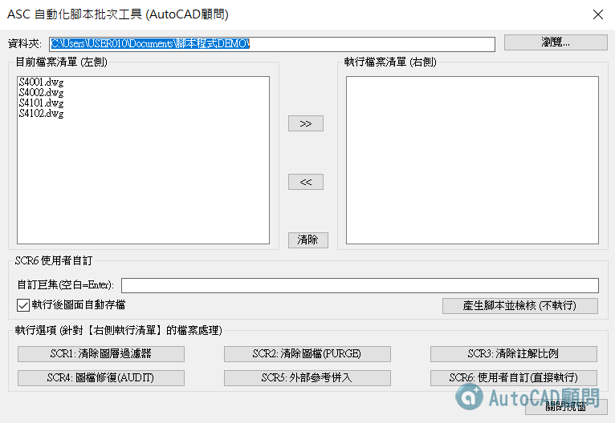

🎯 功能簡述
自動執行一連串 AutoCAD 指令（像腳本一樣）
🔥 每天都在做一樣事情的人
一句話總結，把你每天重複點的動作，變成一次自動跑完！
👇贊助A會請下載更新程式
[贊助A分享]AutoScript腳本(DCL介面)+外掛工具列開關
https://www.autocad-tw.com/t30523-topic
😙有興趣手動自己寫看看👇延伸閱讀
AutoCAD 教你自己寫SCR腳本檔 基礎+外掛
https://www.autocad-tw.com/t26985-topic
[進階]AutoCAD SCRIPT－圖檔清單+腳本建立
https://www.autocad-tw.com/t19630-topic
--------------------------
歡迎加入 Youtube 頻道會員(NT15元)
😁支持我們製作更多優質教學
--------------------------